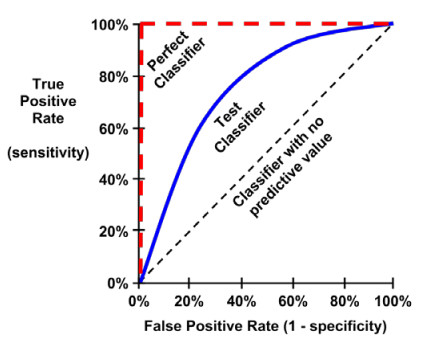

In my above article — do some classification models by iris data set , I used a metric of accuracy, that divided the proportion of correct predictions by the total number of predictions, to measure classification performance in kinds of models .
There are also many other metrics such as precision, recall, they are often used to evaluated the learner.
These metrics all are computed by confusion matrix, if two models have the same confusion matrix, then they will have the same metrics.
Classification often involves a balance between being overly conservative and overly aggressive in decision making.
For example, an e-mail filter could guarantee to eliminate every spam message by aggressively eliminating nearly every ham message at the same time.
On the other hand, a guarantee that no ham messages will be inadvertently filtered might allow an unacceptable amount of spam to pass through the filter.
This trade-off is captured by metrics: sensitivity and specificity.
The sensitivity of a model (also called the true positive rate), measures the proportion of positive examples that were correctly classified.
\[sensitivity\ =\ \frac{TP}{TP\ +\ FN}\]
The specificity of a model (also called the true negative rate), measures the proportion of negative examples that were correctly classified.
\[specificity\ =\ \frac{TN}{TN\ +\ FP}\]
Closely related to sensitivity and specificity are two other performance metrics: precision and recall.
The precision (also known as the positive predictive value) is defined as the proportion of positive examples that are truly positive, in other words, when a model predicts the positive class, how often is it correct?
A precise model will only predict the positive class in cases very likely to be positive.
It will be very trustworthy.
\[precision\ =\ \frac{TP}{TP\ +\ FP}\]
On the other hand, recall is a metric of how complete the results are.
This is defined as the number of true positives over the total number of positives.
You may recognize that this is the same as sensitivity, only the interpretation differs.
A model with high recall captures a large portion of the positive examples, meaning that it has wide breadth.
\[recall\ =\ \frac{TP}{TP\ +\ FN}\]
A metric of model performance that combines precision and recall into a single number is known as the F-measure (also sometimes called the F1 score or the F-score).
\[F-measure\ =\ \frac{2\ \cdot\ precision \cdot\ recall}{recall\ +\ precision}=\frac{2\cdot TP}{2\cdot TP\ +\ FP\ +\ FN}\]
The ROC curve (Receive Operating Characteristic) is commonly used to examine the trade-off between the detection of true positives, while avoiding the false positives.

The closer the curve is to the perfect classifier, the better it is at identifying positive values.
This can measured using a metric known as the area under the ROC curve (abbreviated AUC).
AUC ranges from 0.5 (for a classifier with no predictive value), to 1.0 (for a perfect classifier).
Here, we will use field.goals dataset in nutshell package as an example, try some classifier to do some metrics of model performance.
#######################################################
### use field.goals dataset to test classifier performance
#######################################################
# load the data set
library(nutshell)
data(field.goals)
# create a new binary variable for dataset
data <- transform(field.goals,
play.type = factor(ifelse(play.type == "FG good", "good", "bad")))
head(data)## home.team week qtr away.team offense defense play.type player yards
## 1 ARI 14 3 WAS ARI WAS good 1-N.Rackers 20
## 2 ARI 2 4 STL ARI STL good 1-N.Rackers 35
## 3 ARI 7 3 TEN ARI TEN good 1-N.Rackers 24
## 4 ARI 12 2 JAC JAC ARI good 10-J.Scobee 30
## 5 ARI 2 3 STL ARI STL good 1-N.Rackers 48
## 6 ARI 7 4 TEN TEN ARI bad 15-C.Hentrich 33
## stadium.type
## 1 Out
## 2 Out
## 3 Out
## 4 Out
## 5 Out
## 6 Outsummary(data)## home.team week qtr away.team offense
## NYG : 38 Min. : 1.000 Min. :1.000 NO : 37 ARI : 45
## HOU : 37 1st Qu.: 5.000 1st Qu.:2.000 OAK : 37 NYG : 42
## ARI : 36 Median : 9.000 Median :2.000 STL : 37 BAL : 36
## MIN : 36 Mean : 9.203 Mean :2.579 CLE : 35 BUF : 35
## NYJ : 36 3rd Qu.:13.750 3rd Qu.:4.000 NYG : 35 CAR : 35
## BAL : 35 Max. :17.000 Max. :5.000 SEA : 35 HOU : 35
## (Other):764 (Other):766 (Other):754
## defense play.type player yards stadium.type
## SEA : 42 bad :195 1-N.Rackers: 42 Min. :18.00 Both: 69
## NO : 40 good:787 2-J.Feely : 42 1st Qu.:28.00 In :184
## OAK : 38 4-J.Kasay : 35 Median :37.00 Out :729
## SF : 37 9-R.Lindell: 35 Mean :36.28
## CLE : 36 1-P.Edinger: 34 3rd Qu.:44.00
## NYJ : 35 3-K.Brown : 34 Max. :62.00
## (Other):754 (Other) :760We split iris dataset to train-set and test-set.
#########################################
## split the data set to train and test
#########################################
n <- length(data[,1])
index1 <- 1 : n
# divide to 5 part of data
index2 <- rep(1 : 5, ceiling(n / 5))[1 : n]
set.seed(100)
# melt the order of the data
index2 <- sample(index2, n)
# get the one part of the data
m <- index1[index2 == 1]
trainset <- data[-m, ]
testset <- data[m, ]
summary(trainset)## home.team week qtr away.team offense
## NYG : 31 Min. : 1.000 Min. :1.000 CLE : 31 ARI : 37
## ARI : 30 1st Qu.: 5.000 1st Qu.:2.000 NO : 31 NYG : 33
## CIN : 30 Median : 9.000 Median :2.000 STL : 30 BUF : 32
## NYJ : 30 Mean : 9.155 Mean :2.595 BUF : 29 BAL : 31
## ATL : 28 3rd Qu.:14.000 3rd Qu.:4.000 ARI : 28 DEN : 29
## GB : 28 Max. :17.000 Max. :5.000 BAL : 28 STL : 29
## (Other):608 (Other):608 (Other):594
## defense play.type player yards stadium.type
## SEA : 33 bad :155 1-N.Rackers : 35 Min. :18.00 Both: 55
## NYJ : 31 good:630 2-J.Feely : 33 1st Qu.:28.00 In :147
## ATL : 30 9-R.Lindell : 32 Median :37.00 Out :583
## NO : 30 1-J.Elam : 29 Mean :36.26
## GB : 29 14-J.Wilkins: 29 3rd Qu.:44.00
## MIN : 29 3-M.Stover : 29 Max. :61.00
## (Other):603 (Other) :598summary(testset)## home.team week qtr away.team offense
## BAL : 11 Min. : 1.000 Min. :1.000 NYG : 10 HOU : 11
## CHI : 10 1st Qu.: 5.000 1st Qu.:2.000 SF : 10 KC : 11
## CLE : 10 Median :10.000 Median :2.000 MIA : 9 MIN : 11
## HOU : 9 Mean : 9.391 Mean :2.518 OAK : 9 CAR : 9
## KC : 9 3rd Qu.:13.000 3rd Qu.:4.000 MIN : 8 NYG : 9
## NO : 9 Max. :17.000 Max. :4.000 NE : 8 SF : 9
## (Other):139 (Other):143 (Other):137
## defense play.type player yards stadium.type
## OAK : 11 bad : 40 1-L.Tynes : 11 Min. :19.00 Both: 14
## STL : 11 good:157 1-P.Edinger: 11 1st Qu.:29.00 In : 37
## BAL : 10 3-K.Brown : 11 Median :36.00 Out :146
## NO : 10 2-J.Feely : 9 Mean :36.38
## SF : 10 4-J.Kasay : 9 3rd Qu.:44.00
## CHI : 9 6-J.Nedney : 9 Max. :62.00
## (Other):136 (Other) :137Here, our aim is to detective “bad” play type.
Because the number of “bad” is small, if all play types are predicted to “good”, then accuracy is 636/(636 + 149) = 0.81, about 81% predict is right in train set, but there is useless to detective “bad” in above predict method.
So only accuracy rate in unbalance data set (such as bad : good is 149 : 636 ) to compare the performance of classifier will lead to misunderstand and meaningless.
So, we do some classification models and compute their confusion matrix in train-set and test-set and then we compute some metrics by confusion matrix.
Logistic regression model in train set.
## logistic regression
logic_model<- glm(play.type ~ ., data = trainset, family = binomial)
#summary(logic_model)
logic_model2<-step(logic_model)## Start: AIC=781.26
## play.type ~ home.team + week + qtr + away.team + offense + defense +
## player + yards + stadium.type
##
##
## Step: AIC=781.26
## play.type ~ home.team + week + qtr + away.team + offense + defense +
## player + yards
##
## Df Deviance AIC
## - away.team 1 534.4 776.4
## - qtr 1 534.9 776.9
## <none> 537.3 781.3
## - player 25 589.6 783.6
## - home.team 2 1868.9 2108.9
## - defense 6 9515.5 9747.5
## - week 7 9876.0 10106.0
## - yards 7 12326.9 12556.9
## - offense 1 20229.5 20471.5
##
## Step: AIC=776.38
## play.type ~ home.team + week + qtr + offense + defense + player +
## yards
##
## Df Deviance AIC
## - defense 36 584.51 754.51
## - offense 7 535.54 763.54
## - home.team 31 589.31 769.31
## - qtr 2 535.27 773.27
## <none> 534.38 776.38
## - player 24 589.56 783.56
## - yards 1 629.25 869.25
## - week 2 898.40 1136.40
##
## Step: AIC=754.51
## play.type ~ home.team + week + qtr + offense + player + yards
##
## Df Deviance AIC
## - home.team 31 614.63 722.63
## - week 1 584.51 752.51
## - qtr 1 584.54 752.54
## - offense 2 587.22 753.22
## <none> 584.51 754.51
## - player 19 630.20 762.20
## - yards -4 682.14 860.14
##
## Step: AIC=722.63
## play.type ~ week + qtr + offense + player + yards
##
## Df Deviance AIC
## - week 1 614.63 720.63
## - qtr 1 614.69 720.69
## - offense 2 618.54 722.54
## <none> 614.63 722.63
## - player 19 659.17 729.17
## - yards 1 701.87 807.87
##
## Step: AIC=720.63
## play.type ~ qtr + offense + player + yards
##
## Df Deviance AIC
## - qtr 1 614.69 718.69
## - offense 2 618.55 720.55
## <none> 614.63 720.63
## - player 19 659.18 727.18
## - yards -4 708.81 822.81
##
## Step: AIC=718.69
## play.type ~ offense + player + yards
##
## Df Deviance AIC
## - offense 2 618.67 718.67
## <none> 614.69 718.69
## - player 19 659.58 725.58
## - yards -4 800.13 912.13
##
## Step: AIC=718.67
## play.type ~ player + yards
##
## Df Deviance AIC
## - player 48 692.43 696.43
## <none> 618.67 718.67
## - yards 1 707.00 805.00
##
## Step: AIC=696.43
## play.type ~ yards
##
## Df Deviance AIC
## <none> 692.43 696.43
## - yards 1 780.05 782.05#summary(logic_model2)
# confusion matrix in trainset
logic_model2_pred_train <- predict(logic_model2, trainset, type = "response")
table(ifelse(logic_model2_pred_train > 0.5, "good", "bad"), trainset$play.type)##
## bad good
## bad 11 6
## good 144 624library(caret)
confusionMatrix(factor(ifelse(logic_model2_pred_train > 0.5, "good", "bad")), trainset$play.type)## Confusion Matrix and Statistics
##
## Reference
## Prediction bad good
## bad 11 6
## good 144 624
##
## Accuracy : 0.8089
## 95% CI : (0.7796, 0.8359)
## No Information Rate : 0.8025
## P-Value [Acc > NIR] : 0.3461
##
## Kappa : 0.0925
##
## Mcnemar's Test P-Value : <2e-16
##
## Sensitivity : 0.07097
## Specificity : 0.99048
## Pos Pred Value : 0.64706
## Neg Pred Value : 0.81250
## Prevalence : 0.19745
## Detection Rate : 0.01401
## Detection Prevalence : 0.02166
## Balanced Accuracy : 0.53072
##
## 'Positive' Class : bad
## Logistic regression model in test set.
# confusion matrix in testset
logic_model2_pred_test <- predict(logic_model2, testset, type = "response")
table(ifelse(logic_model2_pred_test > 0.5, "good", "bad"), testset$play.type)##
## bad good
## bad 1 1
## good 39 156confusionMatrix(factor(ifelse(logic_model2_pred_test > 0.5, "good", "bad")), testset$play.type)## Confusion Matrix and Statistics
##
## Reference
## Prediction bad good
## bad 1 1
## good 39 156
##
## Accuracy : 0.797
## 95% CI : (0.7339, 0.8508)
## No Information Rate : 0.797
## P-Value [Acc > NIR] : 0.5422
##
## Kappa : 0.0288
##
## Mcnemar's Test P-Value : 4.909e-09
##
## Sensitivity : 0.025000
## Specificity : 0.993631
## Pos Pred Value : 0.500000
## Neg Pred Value : 0.800000
## Prevalence : 0.203046
## Detection Rate : 0.005076
## Detection Prevalence : 0.010152
## Balanced Accuracy : 0.509315
##
## 'Positive' Class : bad
## Knn in train set.
## k-nearest neighbor
library(class)
train_x <- as.matrix(trainset[, c(2, 3, 9)])
test_x <- as.matrix(testset[, c(2, 3, 9)])
train_y <- trainset[, 7]
set.seed(1)
knn_pred_train <- knn(train_x, train_x, train_y, k = 4)
table(knn_pred_train, trainset$play.type)##
## knn_pred_train bad good
## bad 52 31
## good 103 599confusionMatrix(knn_pred_train, trainset$play.type)## Confusion Matrix and Statistics
##
## Reference
## Prediction bad good
## bad 52 31
## good 103 599
##
## Accuracy : 0.8293
## 95% CI : (0.8011, 0.855)
## No Information Rate : 0.8025
## P-Value [Acc > NIR] : 0.03136
##
## Kappa : 0.3471
##
## Mcnemar's Test P-Value : 8.598e-10
##
## Sensitivity : 0.33548
## Specificity : 0.95079
## Pos Pred Value : 0.62651
## Neg Pred Value : 0.85328
## Prevalence : 0.19745
## Detection Rate : 0.06624
## Detection Prevalence : 0.10573
## Balanced Accuracy : 0.64314
##
## 'Positive' Class : bad
## Knn in test set.
knn_pred_test <- knn(train_x, test_x, train_y, k = 4)
table(knn_pred_test, testset$play.type)##
## knn_pred_test bad good
## bad 7 17
## good 33 140confusionMatrix(knn_pred_test, testset$play.type)## Confusion Matrix and Statistics
##
## Reference
## Prediction bad good
## bad 7 17
## good 33 140
##
## Accuracy : 0.7462
## 95% CI : (0.6794, 0.8054)
## No Information Rate : 0.797
## P-Value [Acc > NIR] : 0.96578
##
## Kappa : 0.0784
##
## Mcnemar's Test P-Value : 0.03389
##
## Sensitivity : 0.17500
## Specificity : 0.89172
## Pos Pred Value : 0.29167
## Neg Pred Value : 0.80925
## Prevalence : 0.20305
## Detection Rate : 0.03553
## Detection Prevalence : 0.12183
## Balanced Accuracy : 0.53336
##
## 'Positive' Class : bad
## Decision tree in train set.
## decision tree
library(tree)
tree_model <- tree(play.type ~ week + qtr + yards + stadium.type, trainset)
summary(tree_model)##
## Classification tree:
## tree(formula = play.type ~ week + qtr + yards + stadium.type,
## data = trainset)
## Variables actually used in tree construction:
## [1] "yards"
## Number of terminal nodes: 4
## Residual mean deviance: 0.868 = 677.9 / 781
## Misclassification error rate: 0.1898 = 149 / 785plot(tree_model)
text(tree_model, pretty = 0)
tree_pred_train <- predict(tree_model, trainset, type = "class")
table(tree_pred_train, trainset$play.type)##
## tree_pred_train bad good
## bad 33 27
## good 122 603confusionMatrix(tree_pred_train, trainset$play.type)## Confusion Matrix and Statistics
##
## Reference
## Prediction bad good
## bad 33 27
## good 122 603
##
## Accuracy : 0.8102
## 95% CI : (0.781, 0.8371)
## No Information Rate : 0.8025
## P-Value [Acc > NIR] : 0.3134
##
## Kappa : 0.2211
##
## Mcnemar's Test P-Value : 1.352e-14
##
## Sensitivity : 0.21290
## Specificity : 0.95714
## Pos Pred Value : 0.55000
## Neg Pred Value : 0.83172
## Prevalence : 0.19745
## Detection Rate : 0.04204
## Detection Prevalence : 0.07643
## Balanced Accuracy : 0.58502
##
## 'Positive' Class : bad
## Decision tree in test set.
tree_pred_test <- predict(tree_model, testset, type = "class")
table(tree_pred_test, testset$play.type)##
## tree_pred_test bad good
## bad 8 11
## good 32 146confusionMatrix(tree_pred_test, testset$play.type)## Confusion Matrix and Statistics
##
## Reference
## Prediction bad good
## bad 8 11
## good 32 146
##
## Accuracy : 0.7817
## 95% CI : (0.7175, 0.8373)
## No Information Rate : 0.797
## P-Value [Acc > NIR] : 0.735843
##
## Kappa : 0.1615
##
## Mcnemar's Test P-Value : 0.002289
##
## Sensitivity : 0.20000
## Specificity : 0.92994
## Pos Pred Value : 0.42105
## Neg Pred Value : 0.82022
## Prevalence : 0.20305
## Detection Rate : 0.04061
## Detection Prevalence : 0.09645
## Balanced Accuracy : 0.56497
##
## 'Positive' Class : bad
## Bagging in train set.
## bagging
library(randomForest)
bag_model <- randomForest(play.type ~ week + qtr + yards + stadium.type, data = trainset,
mtry = 4,
importance = TRUE)
bag_model##
## Call:
## randomForest(formula = play.type ~ week + qtr + yards + stadium.type, data = trainset, mtry = 4, importance = TRUE)
## Type of random forest: classification
## Number of trees: 500
## No. of variables tried at each split: 4
##
## OOB estimate of error rate: 25.35%
## Confusion matrix:
## bad good class.error
## bad 39 116 0.7483871
## good 83 547 0.1317460bag_pred_train <- predict(bag_model, newdata = trainset)
table(bag_pred_train, trainset$play.type)##
## bag_pred_train bad good
## bad 144 4
## good 11 626confusionMatrix(bag_pred_train, trainset$play.type)## Confusion Matrix and Statistics
##
## Reference
## Prediction bad good
## bad 144 4
## good 11 626
##
## Accuracy : 0.9809
## 95% CI : (0.9687, 0.9893)
## No Information Rate : 0.8025
## P-Value [Acc > NIR] : <2e-16
##
## Kappa : 0.9387
##
## Mcnemar's Test P-Value : 0.1213
##
## Sensitivity : 0.9290
## Specificity : 0.9937
## Pos Pred Value : 0.9730
## Neg Pred Value : 0.9827
## Prevalence : 0.1975
## Detection Rate : 0.1834
## Detection Prevalence : 0.1885
## Balanced Accuracy : 0.9613
##
## 'Positive' Class : bad
## Bagging in test set.
bag_pred_test <- predict(bag_model, newdata = testset)
table(bag_pred_test, testset$play.type)##
## bag_pred_test bad good
## bad 8 24
## good 32 133confusionMatrix(bag_pred_test, testset$play.type)## Confusion Matrix and Statistics
##
## Reference
## Prediction bad good
## bad 8 24
## good 32 133
##
## Accuracy : 0.7157
## 95% CI : (0.6473, 0.7776)
## No Information Rate : 0.797
## P-Value [Acc > NIR] : 0.9975
##
## Kappa : 0.0509
##
## Mcnemar's Test P-Value : 0.3496
##
## Sensitivity : 0.20000
## Specificity : 0.84713
## Pos Pred Value : 0.25000
## Neg Pred Value : 0.80606
## Prevalence : 0.20305
## Detection Rate : 0.04061
## Detection Prevalence : 0.16244
## Balanced Accuracy : 0.52357
##
## 'Positive' Class : bad
## Random forest in train set.
## random forest
rf_model <- randomForest(play.type ~ week + qtr + yards + stadium.type, data = trainset,
importance = TRUE)
rf_model##
## Call:
## randomForest(formula = play.type ~ week + qtr + yards + stadium.type, data = trainset, importance = TRUE)
## Type of random forest: classification
## Number of trees: 500
## No. of variables tried at each split: 2
##
## OOB estimate of error rate: 23.69%
## Confusion matrix:
## bad good class.error
## bad 29 126 0.8129032
## good 60 570 0.0952381rf_pred_train <- predict(rf_model, newdata = trainset)
table(rf_pred_train, trainset$play.type)##
## rf_pred_train bad good
## bad 125 2
## good 30 628confusionMatrix(rf_pred_train, trainset$play.type)## Confusion Matrix and Statistics
##
## Reference
## Prediction bad good
## bad 125 2
## good 30 628
##
## Accuracy : 0.9592
## 95% CI : (0.9429, 0.972)
## No Information Rate : 0.8025
## P-Value [Acc > NIR] : < 2.2e-16
##
## Kappa : 0.862
##
## Mcnemar's Test P-Value : 1.815e-06
##
## Sensitivity : 0.8065
## Specificity : 0.9968
## Pos Pred Value : 0.9843
## Neg Pred Value : 0.9544
## Prevalence : 0.1975
## Detection Rate : 0.1592
## Detection Prevalence : 0.1618
## Balanced Accuracy : 0.9016
##
## 'Positive' Class : bad
## Random forest in test set.
rf_pred_test <- predict(rf_model, newdata = testset)
table(rf_pred_test, testset$play.type)##
## rf_pred_test bad good
## bad 8 17
## good 32 140confusionMatrix(rf_pred_test, testset$play.type)## Confusion Matrix and Statistics
##
## Reference
## Prediction bad good
## bad 8 17
## good 32 140
##
## Accuracy : 0.7513
## 95% CI : (0.6848, 0.81)
## No Information Rate : 0.797
## P-Value [Acc > NIR] : 0.9510
##
## Kappa : 0.1066
##
## Mcnemar's Test P-Value : 0.0455
##
## Sensitivity : 0.20000
## Specificity : 0.89172
## Pos Pred Value : 0.32000
## Neg Pred Value : 0.81395
## Prevalence : 0.20305
## Detection Rate : 0.04061
## Detection Prevalence : 0.12690
## Balanced Accuracy : 0.54586
##
## 'Positive' Class : bad
## Boosting in train set.
## boosting
library(gbm)
boost_model <- gbm(as.numeric(play.type) - 1 ~ week + qtr + yards + stadium.type, data = trainset)## Distribution not specified, assuming bernoulli ...summary(boost_model)
## var rel.inf
## yards yards 79.739582
## week week 12.703111
## qtr qtr 3.970923
## stadium.type stadium.type 3.586384boost_pred_train <- predict(boost_model, newdata = trainset, n.trees = 100,
type = "response")
table(ifelse(boost_pred_train > 0.8, "good", "bad"), trainset$play.type)##
## bad good
## bad 97 157
## good 58 473confusionMatrix(factor(ifelse(boost_pred_train > 0.8, "good", "bad")), trainset$play.type)## Confusion Matrix and Statistics
##
## Reference
## Prediction bad good
## bad 97 157
## good 58 473
##
## Accuracy : 0.7261
## 95% CI : (0.6935, 0.757)
## No Information Rate : 0.8025
## P-Value [Acc > NIR] : 1
##
## Kappa : 0.3035
##
## Mcnemar's Test P-Value : 2.332e-11
##
## Sensitivity : 0.6258
## Specificity : 0.7508
## Pos Pred Value : 0.3819
## Neg Pred Value : 0.8908
## Prevalence : 0.1975
## Detection Rate : 0.1236
## Detection Prevalence : 0.3236
## Balanced Accuracy : 0.6883
##
## 'Positive' Class : bad
## Boosting in test set.
boost_pred_test <- predict(boost_model, newdata = testset, n.trees = 100,
type = "response")
table(ifelse(boost_pred_test > 0.8, "good", "bad"), testset$play.type)##
## bad good
## bad 25 36
## good 15 121confusionMatrix(factor(ifelse(boost_pred_test > 0.8, "good", "bad")), testset$play.type)## Confusion Matrix and Statistics
##
## Reference
## Prediction bad good
## bad 25 36
## good 15 121
##
## Accuracy : 0.7411
## 95% CI : (0.6741, 0.8008)
## No Information Rate : 0.797
## P-Value [Acc > NIR] : 0.976652
##
## Kappa : 0.331
##
## Mcnemar's Test P-Value : 0.005101
##
## Sensitivity : 0.6250
## Specificity : 0.7707
## Pos Pred Value : 0.4098
## Neg Pred Value : 0.8897
## Prevalence : 0.2030
## Detection Rate : 0.1269
## Detection Prevalence : 0.3096
## Balanced Accuracy : 0.6979
##
## 'Positive' Class : bad
## Support vector machine in train set.
## support vector machine
library(e1071)
svm_model <- svm(play.type ~ week + qtr + yards + stadium.type, data = trainset,
kernel = "linear", scale = FALSE)
summary(svm_model)##
## Call:
## svm(formula = play.type ~ week + qtr + yards + stadium.type, data = trainset,
## kernel = "linear", scale = FALSE)
##
##
## Parameters:
## SVM-Type: C-classification
## SVM-Kernel: linear
## cost: 1
##
## Number of Support Vectors: 348
##
## ( 193 155 )
##
##
## Number of Classes: 2
##
## Levels:
## bad goodsvm_pred_train <- predict(svm_model, trainset)
table(svm_pred_train, trainset$play.type)##
## svm_pred_train bad good
## bad 0 0
## good 155 630confusionMatrix(svm_pred_train, trainset$play.type)## Confusion Matrix and Statistics
##
## Reference
## Prediction bad good
## bad 0 0
## good 155 630
##
## Accuracy : 0.8025
## 95% CI : (0.7729, 0.8299)
## No Information Rate : 0.8025
## P-Value [Acc > NIR] : 0.5215
##
## Kappa : 0
##
## Mcnemar's Test P-Value : <2e-16
##
## Sensitivity : 0.0000
## Specificity : 1.0000
## Pos Pred Value : NaN
## Neg Pred Value : 0.8025
## Prevalence : 0.1975
## Detection Rate : 0.0000
## Detection Prevalence : 0.0000
## Balanced Accuracy : 0.5000
##
## 'Positive' Class : bad
## Support vector machine in test set.
svm_pred_test <- predict(svm_model, testset)
table(svm_pred_test, testset$play.type)##
## svm_pred_test bad good
## bad 0 0
## good 40 157confusionMatrix(svm_pred_test, testset$play.type)## Confusion Matrix and Statistics
##
## Reference
## Prediction bad good
## bad 0 0
## good 40 157
##
## Accuracy : 0.797
## 95% CI : (0.7339, 0.8508)
## No Information Rate : 0.797
## P-Value [Acc > NIR] : 0.5422
##
## Kappa : 0
##
## Mcnemar's Test P-Value : 6.984e-10
##
## Sensitivity : 0.000
## Specificity : 1.000
## Pos Pred Value : NaN
## Neg Pred Value : 0.797
## Prevalence : 0.203
## Detection Rate : 0.000
## Detection Prevalence : 0.000
## Balanced Accuracy : 0.500
##
## 'Positive' Class : bad
## Naive bayes in train set.
## naive bayes
library(e1071)
bayes_model <- naiveBayes(trainset$yards, trainset$play.type)
summary(bayes_model)## Length Class Mode
## apriori 2 table numeric
## tables 1 -none- list
## levels 2 -none- character
## isnumeric 1 -none- logical
## call 3 -none- callbayes_pred_train <- predict(bayes_model, trainset$yards, type = "class")
table(bayes_pred_train, trainset$play.type)##
## bayes_pred_train bad good
## bad 0 0
## good 155 630confusionMatrix(bayes_pred_train, trainset$play.type)## Confusion Matrix and Statistics
##
## Reference
## Prediction bad good
## bad 0 0
## good 155 630
##
## Accuracy : 0.8025
## 95% CI : (0.7729, 0.8299)
## No Information Rate : 0.8025
## P-Value [Acc > NIR] : 0.5215
##
## Kappa : 0
##
## Mcnemar's Test P-Value : <2e-16
##
## Sensitivity : 0.0000
## Specificity : 1.0000
## Pos Pred Value : NaN
## Neg Pred Value : 0.8025
## Prevalence : 0.1975
## Detection Rate : 0.0000
## Detection Prevalence : 0.0000
## Balanced Accuracy : 0.5000
##
## 'Positive' Class : bad
## Naive bayes in test set.
bayes_pred_test <- predict(bayes_model, testset$yards, type = "class")
table(bayes_pred_test, testset$play.type)##
## bayes_pred_test bad good
## bad 0 0
## good 40 157confusionMatrix(bayes_pred_test, testset$play.type)## Confusion Matrix and Statistics
##
## Reference
## Prediction bad good
## bad 0 0
## good 40 157
##
## Accuracy : 0.797
## 95% CI : (0.7339, 0.8508)
## No Information Rate : 0.797
## P-Value [Acc > NIR] : 0.5422
##
## Kappa : 0
##
## Mcnemar's Test P-Value : 6.984e-10
##
## Sensitivity : 0.000
## Specificity : 1.000
## Pos Pred Value : NaN
## Neg Pred Value : 0.797
## Prevalence : 0.203
## Detection Rate : 0.000
## Detection Prevalence : 0.000
## Balanced Accuracy : 0.500
##
## 'Positive' Class : bad
## Artificial neural networks in train set.
## artificial neural networks
library(nnet)
ann_model <- nnet(play.type ~ week + qtr + yards + stadium.type, data = trainset, size = 3)## # weights: 22
## initial value 526.864211
## iter 10 value 390.021519
## iter 20 value 382.073496
## iter 30 value 349.819340
## iter 40 value 346.730901
## iter 50 value 345.183199
## iter 60 value 342.878101
## iter 70 value 334.338800
## iter 80 value 331.712558
## iter 90 value 330.983791
## iter 100 value 330.705134
## final value 330.705134
## stopped after 100 iterationsann_pred_train <- predict(ann_model, newdata = trainset, type = "class")
table(ann_pred_train, trainset$play.type)##
## ann_pred_train bad good
## bad 22 19
## good 133 611confusionMatrix(factor(ann_pred_train), trainset$play.type)## Confusion Matrix and Statistics
##
## Reference
## Prediction bad good
## bad 22 19
## good 133 611
##
## Accuracy : 0.8064
## 95% CI : (0.777, 0.8335)
## No Information Rate : 0.8025
## P-Value [Acc > NIR] : 0.4147
##
## Kappa : 0.1547
##
## Mcnemar's Test P-Value : <2e-16
##
## Sensitivity : 0.14194
## Specificity : 0.96984
## Pos Pred Value : 0.53659
## Neg Pred Value : 0.82124
## Prevalence : 0.19745
## Detection Rate : 0.02803
## Detection Prevalence : 0.05223
## Balanced Accuracy : 0.55589
##
## 'Positive' Class : bad
## Artificial neural networks in test set.
ann_pred_test <- predict(ann_model, newdata = testset, type = "class")
table(ann_pred_test, testset$play.type)##
## ann_pred_test bad good
## bad 5 6
## good 35 151confusionMatrix(factor(ann_pred_test), testset$play.type)## Confusion Matrix and Statistics
##
## Reference
## Prediction bad good
## bad 5 6
## good 35 151
##
## Accuracy : 0.7919
## 95% CI : (0.7284, 0.8463)
## No Information Rate : 0.797
## P-Value [Acc > NIR] : 0.611
##
## Kappa : 0.1189
##
## Mcnemar's Test P-Value : 1.226e-05
##
## Sensitivity : 0.12500
## Specificity : 0.96178
## Pos Pred Value : 0.45455
## Neg Pred Value : 0.81183
## Prevalence : 0.20305
## Detection Rate : 0.02538
## Detection Prevalence : 0.05584
## Balanced Accuracy : 0.54339
##
## 'Positive' Class : bad
## We summary above confusion matrix and then find out: decision tree, support vector machine and artificial networks confusion matrix in test set are same, predict all play type as “good”.
We display metrics of all above models in a table and compare kinds of measures between train set and test set, we will see some classifier do better in train set, but worse in test set, so split the data set to train set and test set is important.
Our aim is detect more “bad” play type, at the same time we want to achieve higher accuracy as possible.
Firstly, we choose high recall in test set, secondly, we take account of better accuracy in test set.
So, we choose boosting, knn and logistic regression .
In fact, classifier is not only return a predict value “good” or “bad”, it will return a probability value about “good” or “bad”.
Such as logistic regression, in above model, I simply choose 0.5 as threshold value, then get confusion matrix, recall and precision, etc.
If I do not chose a threshold value, to every probability, we will get a confusion matrix, recall and so on, eventually, we will get a series confusion matrix, recall, precision, we could plot series measures in an plot, such as ROC curve.
Logistic regression model in train set.
When cut-off: 0.5, TPR (true positive rate, recall, sensitivity) : 0.04, now best cut-off: 0.8326, TPR: 0.58, better.
############################################################
### make roc curve
############################################################
# make single roc plot method 1
library(ROCR)
pred <- prediction(logic_model2_pred_train, trainset$play.type)
perf <- performance(pred,"tpr","fpr")
plot(perf,colorize=TRUE)
grid(5, 5, lwd = 1)
points(c(0,1), c(0,1), type="l", lty=2, lwd=2, col="grey")
auc.tmp <- performance(pred,"auc")
auc <- as.numeric(auc.tmp@y.values)
auc <- round(auc, 4)We could compare roc curve of some models in train set at one graph.
The more near left top corner roc curve is, the better the model is.
From prediction in train set, bagging and random forest is best.
#############################################
# make multiply roc plot in train set
#############################################
fpr_tpr <- function(p, dataset) {
TPR <- rep(0, length(p))
FPR <- rep(0, length(p))
for(i in 1 : length(p)){
p0 <- p[order(p)[i]]
label_true <- ifelse(dataset$play.type == "good", 1, 0)
label_pred <- 1 * (p > p0)
TPR[i] <- sum(label_pred * label_true) / sum(label_true)
FPR[i] <- sum(label_pred * (1 - label_true)) / sum(1 - label_true)
}
list(fpr = FPR, tpr = TPR)
}
# plot logistic regression roc
logic_train_measures <- fpr_tpr(p = logic_model2_pred_train, dataset = trainset)
plot(logic_train_measures$fpr, logic_train_measures$tpr, type = "l", col = 2,
ylab = "TPR", xlab = "FPR")
title("ROC curve in train set")
points(c(0, 1), c(0, 1), type = "l", lty = 2)
# plot knn roc
knn_pred_train2 <- knn(train_x, train_x, train_y, k = 4, prob = TRUE)
knn_train_measures <- fpr_tpr(p = attr(knn_pred_train2, "prob"), dataset = trainset)
points(knn_train_measures$fpr, knn_train_measures$tpr, type = "l", col = 3)
# plot tree roc
tree_pred_train2 <- predict(tree_model, trainset, type = "vector")
tree_train_measures <- fpr_tpr(p = tree_pred_train2[, 2], dataset = trainset)
points(tree_train_measures$fpr, tree_train_measures$tpr, type = "l", col = 4)
# plot bagging roc
bag_pred_train2 <- predict(bag_model, newdata = trainset, type = "prob")
bag_train_measures <- fpr_tpr(p = bag_pred_train2[, 2], dataset = trainset)
points(bag_train_measures$fpr, bag_train_measures$tpr, type = "l", col = 5)
# plot random forest roc
rf_pred_train2 <- predict(rf_model, newdata = trainset, type = "prob")
rf_train_measures <- fpr_tpr(p = rf_pred_train2[, 2], dataset = trainset)
points(rf_train_measures$fpr, rf_train_measures$tpr, type = "l", col = 6)
# plot boosting roc
boost_train_measures <- fpr_tpr(p = boost_pred_train, dataset = trainset)
points(boost_train_measures$fpr, boost_train_measures$tpr, type = "l", col = 7)
# plot support vector machine roc
svm_pred_train2 <- predict(svm_model, trainset, decision.values = TRUE)
svm_train_measures <- fpr_tpr(p = attr(svm_pred_train2, "decision.values"), dataset = trainset)
points(svm_train_measures$fpr, svm_train_measures$tpr, type = "l", col = 8)
# plot naive bayes roc
bayes_pred_train2 <- predict(bayes_model, trainset$yards, type = "raw")
bayes_train_measures <- fpr_tpr(p = bayes_pred_train2[, 2], dataset = trainset)
points(bayes_train_measures$fpr, bayes_train_measures$tpr, type = "l", col = 9)
# plot artificial neural networks
ann_pred_train2 <- predict(ann_model, newdata = trainset, type = "raw")
ann_train_measures <- fpr_tpr(p = ann_pred_train2[, 1], dataset = trainset)
points(ann_train_measures$fpr, ann_train_measures$tpr, type = "l", col = 10)
legend("bottomright", c("logis", "knn", "tree", "bag", "rf", "boost",
"svm", "bayes", "ann"),
lwd = c(2, 2, 2),
lty = rep(1, 9), col = 2:10, cex = .8) We see roc curve of kinds of model in test set.
We see roc curve of kinds of model in test set.
################################################
# make multiply roc plot in test set
################################################
# plot logistic regression roc
logic_test_measures <- fpr_tpr(p = logic_model2_pred_test, dataset = testset)
plot(logic_test_measures$fpr, logic_test_measures$tpr, type = "l", col = 2,
ylab = "TPR", xlab = "FPR")
title("ROC curve in test set")
points(c(0, 1), c(0, 1), type = "l", lty = 2)
# plot knn roc
knn_pred_test2 <- knn(train_x, test_x, train_y, k = 4, prob = TRUE)
knn_test_measures <- fpr_tpr(p = attr(knn_pred_test2, "prob"), dataset = testset)
points(knn_test_measures$fpr, knn_test_measures$tpr, type = "l", col = 3)
# plot tree roc
tree_pred_test2 <- predict(tree_model, testset, type = "vector")
tree_test_measures <- fpr_tpr(p = tree_pred_test2[, 2], dataset = testset)
points(tree_test_measures$fpr, tree_test_measures$tpr, type = "l", col = 4)
# plot bagging roc
bag_pred_test2 <- predict(bag_model, newdata = testset, type = "prob")
bag_test_measures <- fpr_tpr(p = bag_pred_test2[, 2], dataset = testset)
points(bag_test_measures$fpr, bag_test_measures$tpr, type = "l", col = 5)
# plot random forest roc
rf_pred_test2 <- predict(rf_model, newdata = testset, type = "prob")
rf_test_measures <- fpr_tpr(p = rf_pred_test2[, 2], dataset = testset)
points(rf_test_measures$fpr, rf_test_measures$tpr, type = "l", col = 6)
# plot boosting roc
boost_test_measures <- fpr_tpr(p = boost_pred_test, dataset = testset)
points(boost_test_measures$fpr, boost_test_measures$tpr, type = "l", col = 7)
# plot support vector machine roc
svm_pred_test2 <- predict(svm_model, testset, decision.values = TRUE)
svm_test_measures <- fpr_tpr(p = attr(svm_pred_test2, "decision.values"), dataset = testset)
points(svm_test_measures$fpr, svm_test_measures$tpr, type = "l", col = 8)
# plot naive bayes roc
bayes_pred_test2 <- predict(bayes_model, testset$yards, type = "raw")
bayes_test_measures <- fpr_tpr(p = bayes_pred_test2[, 2], dataset = testset)
points(bayes_test_measures$fpr, bayes_test_measures$tpr, type = "l", col = 9)
# plot artificial neural networks
ann_pred_test2 <- predict(ann_model, newdata = testset, type = "raw")
ann_test_measures <- fpr_tpr(p = ann_pred_test2[, 1], dataset = testset)
points(ann_test_measures$fpr, ann_test_measures$tpr, type = "l", col = 10)
legend("bottomright", c("logis", "knn", "tree", "bag", "rf", "boost",
"svm", "bayes", "ann"),
lwd = c(2, 2, 2),
lty = rep(1, 9), col = 2:10, cex = .8)
# plot better model in roc
plot(logic_test_measures$fpr, logic_test_measures$tpr, type = "l", col = 2,
ylab = "TPR", xlab = "FPR")
title("ROC curve in test set")
points(c(0, 1), c(0, 1), type = "l", lty = 2)
points(boost_test_measures$fpr, boost_test_measures$tpr, type = "l", col = 3)
points(ann_test_measures$fpr, ann_test_measures$tpr, type = "l", col = 4)
legend("bottomright", c("logis", "boost", "ann"),
lwd = c(2, 2, 2),
lty = rep(1, 3), col = 2:4, cex = .8)
Here, the better model are logistic regression, artificial neural networks, boosting.
Referenced books:
Machine Learning with R
R in a nutshell
Applied Predictive Modeling
An Introduction to Statistical Learning with Applications in R
Just record, this article was posted at linkedin, and have 97 views to November 2021.